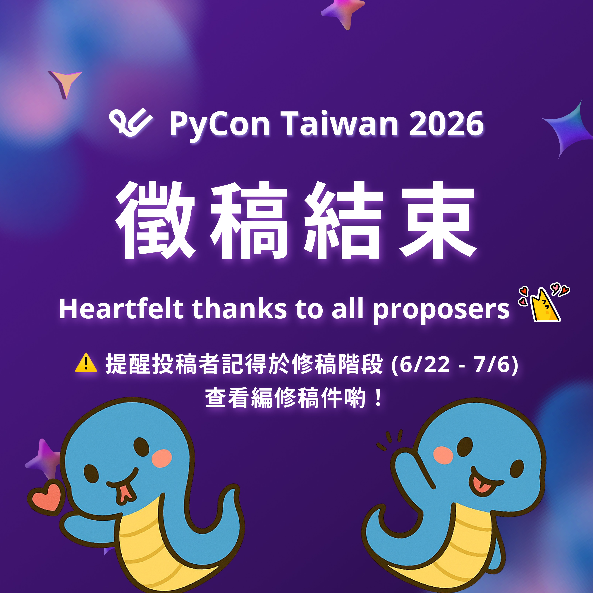
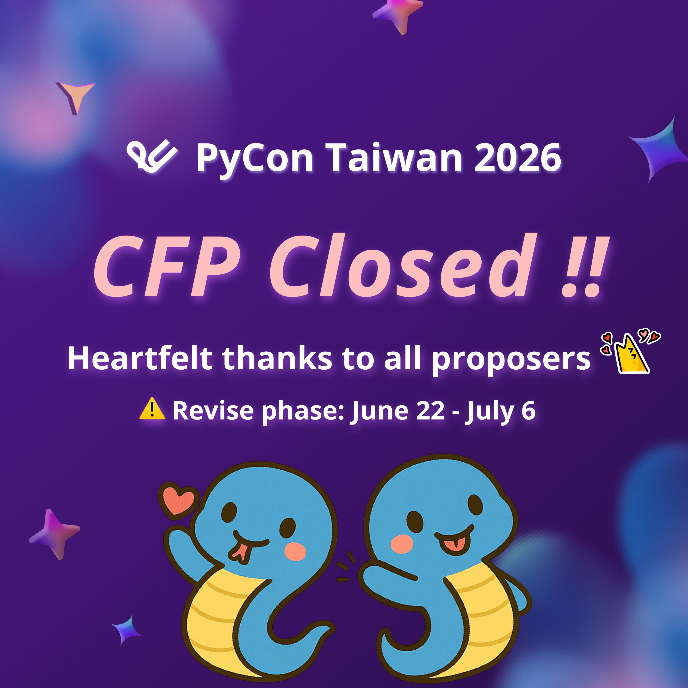

感謝熱烈響應PyCon TW 2026 徵稿順利結束
Posted on Tue 02 June 2026 in announcement


感謝熱烈響應 PyCon TW 2026 徵稿順利結束
PyCon TW 2026 徵稿已正式結束，感謝社群的熱烈參與！
今年我們共收到近 110 份投稿稿件，已是歷年第二高‼️
很高興能看到這麼多優秀的 Python 技術實踐及分享稿件！
接下來，評審委員們將正式進入審稿階段，我們會懷著期待的心情，認真評閱每一份提案，為大家規劃出最精彩的大會全貌。
⚠️ 請將後續重要時程記在小本本上：
6/22（一）至 7/6（一）23:59:59 (AoE) 為「修改提案」時間！
這段期間系統將開放查看審稿意見。評審們會針對內容提供優化建議，請大家務必把握時間回來修改，讓你的提案更有機會脫穎而出 ✨
📌 錯過投稿也沒關係，還是可以加入我們一起玩：
PyCon TW 2026 志工持續火熱招募中！歡迎加入籌備團隊，和我們一起打造今年的 Python 年度盛會 🏃♂️
👉 報名志工： https://lihi1.me/n3GNq
Thank You! PyCon TW 2026 CfP Has Officially Closed
The PyCon TW 2026 Call for Proposals (CfP) has officially closed! We would like to extend our heartfelt thanks to the entire community for your enthusiastic participation.
This year, we received around 110 proposals! We are incredibly thrilled to see such a diverse and outstanding range of Python technical practices and insights shared with us.
Our review committee has now officially entered the evaluation phase. With great excitement and dedication, we will carefully review each and every proposal to curate the most exceptional program lineup for this year's conference.
⚠️ Please mark your calendar for the next crucial phase:
The "Proposal Modification" period will be open from June 22 (Mon) to July 6 (Mon) at 23:59:59 (AoE)!
During this time, the system will open for you to view the reviewers' feedback. Our reviewers will provide constructive suggestions to help optimize your content. Please make sure to log back into the system and refine your proposal to give it the best chance to stand out! ✨
📌 Missed the deadline? You can still be part of the journey:
PyCon TW 2026 Volunteer Recruitment is still underway! We warmly welcome you to join our preparation team and help us build this year's ultimate Python annual feast together. 🏃♂️
👉 Sign up as a volunteer: https://lihi1.me/n3GNq